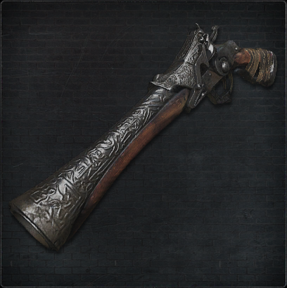
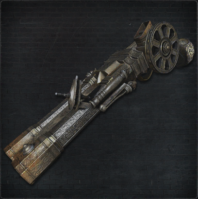

獣狩りの短銃
狩人が獣狩りに用いる、工房製の銃獣狩りの銃は特別製で、 水銀に自らの血を混ぜこれを弾丸とすることで、 獣への威力を確保しているまた、 短銃は散弾銃に比べ素早い射撃が可能なため迎撃などに適する

獣狩りの散弾銃
狩人が獣狩りに用いる、工房製の銃獣狩りの銃は特別製で、 水銀に自らの血を混ぜこれを弾丸とすることで、 獣への威力を確保しているまた、 衝撃により獣のはやい動きに対処する部分も大きく特に散弾を用いるこの銃は、 当てやすく効果が高い

教会の連装銃
特に医療教会の狩人が用いる連装銃ほぼ金属製で、 複雑な機構を有するこの銃は一射撃で二発を発射し、 水銀弾の消費も早い工房の銃よりも慎重な、 切り札的な運用が必要になるだろう